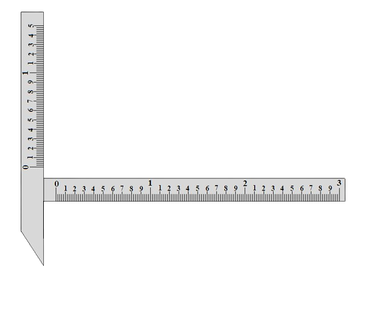
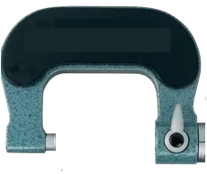
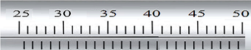
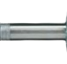
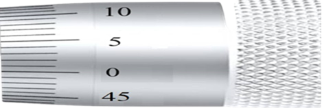
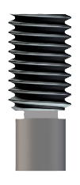
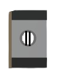
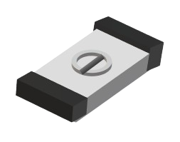
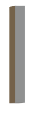

Measurement of the effective diameter E
The distance between the outer surfaces of the two wires ( M (mm)):
The effective diameter ( E (mm)):
The distance between the outer surfaces of the two wires ( M (mm)):
The effective diameter ( E (mm)):






Screw thread specimen
Two Wire
One Wire
